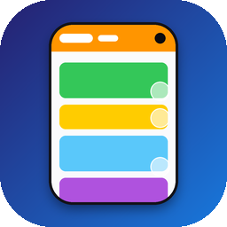

Auf dem Außendisplay des iPhone Duo legt Safari seine Bedienelemente in eine Spalte am rechten Rand – Webseiten enden davor. WideView ist eine Safari-Erweiterung, die Webseiten unter diese Spalte laufen lässt. Die Bedienelemente schweben dann über dem Inhalt.
1. WideView öffnen und „Erweiterung aktivieren“ tippen.
2. WideView einschalten und Zugriff auf alle Websites erlauben.
3. In Safari auf dem Außendisplay im Seitenmenü auf WideView tippen und „Wide“ wählen.
Seite einmal neu laden. WideView wirkt nur auf dem Außendisplay im Hochformat und nur auf Seiten mit mobiler Darstellung – bei „Desktop-Website anfordern“ bleibt die Seite bewusst unverändert.
WideView rückt Kopfzeilen automatisch von der Kamera weg. Klappt das auf einer Seite nicht, schicken Sie gern die Adresse der Seite per E-Mail.
Das ist gewollt: Inhalte laufen unter die Spalte, Safaris Buttons schweben darüber. Nur Kopfzeilen und Banner im Bereich der Kamera rückt WideView automatisch nach links.
Safari fängt Berührungen in seiner Spalte ab – auch zwischen den Buttons. Das kann eine Erweiterung nicht ändern. Einfach etwas scrollen, bis das Element links davon liegt.
Ja, ab Version 1.0.1. Ältere Versionen funktionierten nur bei 100 %.
Keine. Details in der Datenschutzerklärung.
Fragen, Fehler oder Wünsche: dev@timhartung.de